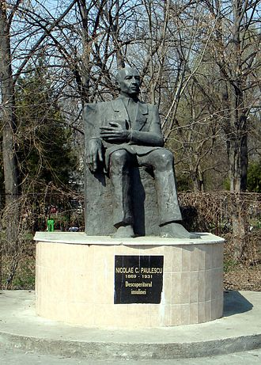

Date personale
Nicolae Constantin Paulescu s-a născut la 8 noiembrie 1869 în București, părinții fiind Costache Paulescu, de profesie negustor și Maria Paulescu (născută Dan¬covici). Nicolae C. Paulescu urmează clasele elementare la „Școala primară de băieți nr. 1” și, în 1880, se înscrie la „Gimnaziul Mihai Bravul” (Liceul Mihai Viteazul), pe care-l va absolvi în 1888. Încă din anii liceului, a dovedit o deosebită înclinare pentru științele naturale, pentru fizică și chimie, precum și pentru limbile străine, clasice și moderne.
Nicolae Paulescu a studiat medicina la Paris, începând cu anul 1888, obținând în 1897 titlul de Doctor în Medicină cu teza Recherches sur la structure de la rate (Cercetări asupra structurii splinei).
Nicolae Paulescu a desfășurat o remarcabilă activitate de cercetare științifică în domeniul fiziologiei, privind în special metabolismul glucidelor, patogeneza diabetului zaharat, rolul pancreasului în asimiliția nutritivă, coagularea sângelui, mecanismul morții subite ș.a. În 1906 a elaborat o metodă originală de extirpare a hipofizei la câine pe cale trans-temporală, care ulterior va fi aplicată în chirurgia hipofizei la om.
În sesiunea din 23 iulie 1921 a Societății de Biologie, Nicolae Paulescu prezintă în patru comunicări rezultatele cercetărilor sale privind acțiunea extractului pancreatic în cazurile de diabet, comunicări ce sunt publicate în revista Societății. Paulescu publică separarea unui principiu activ antidiabetic din pancreas, pe care îl denumește pancreina, și în numărul din 31 august 1921 al revistei de specialitate Archives Internationales de Physiologie, revistă cu apariție simultană în Franța și Belgia. În anul 1922, Paulescu obține, de la Ministerul Industriei și Comerțului din România, brevetul de invenție nr. 6255 intitulat „Pancreina și procedeul său de fabricare”.[14] În nici una din publicații, Nicolae Paulescu nu amintește de experimentele similare publicate de Israel Kleiner în 1915 și 1919.[15]
În anul 1990, Nicolae Paulescu a fost numit post mortem membru al Academiei Române.

Statuia lui Nicolae Paulescu, de lângă Facultatea de Medicină din București